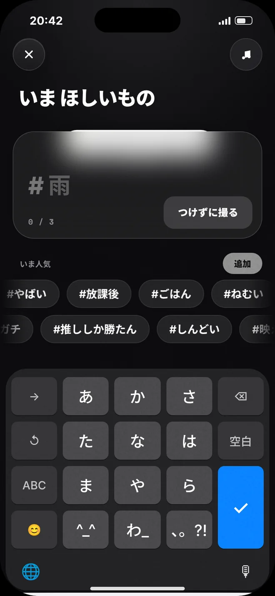
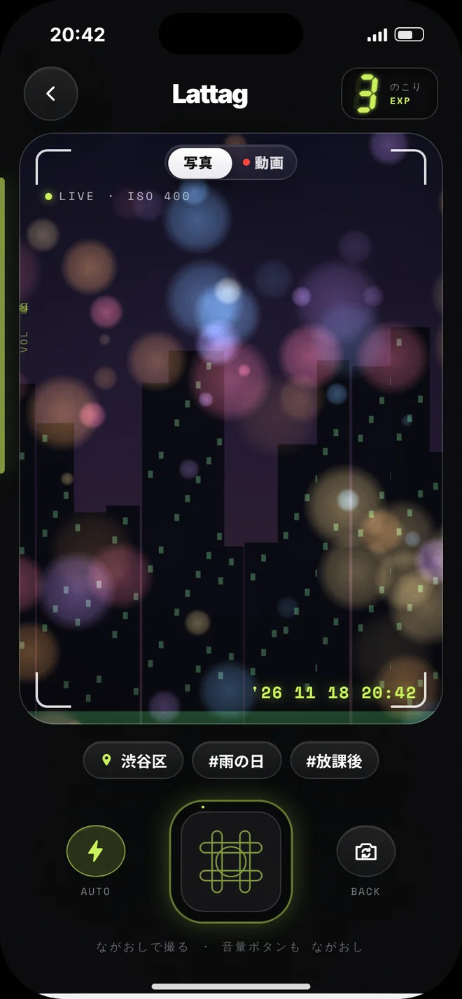
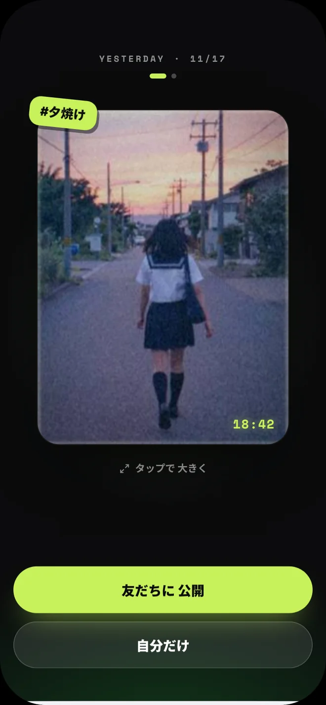
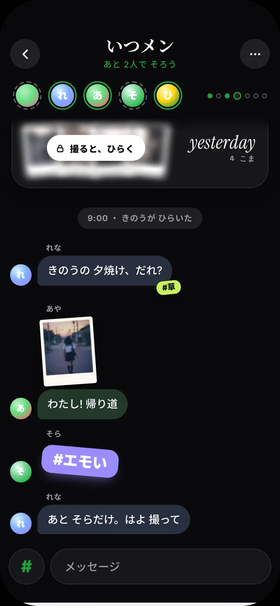
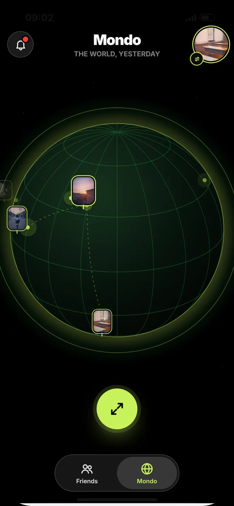
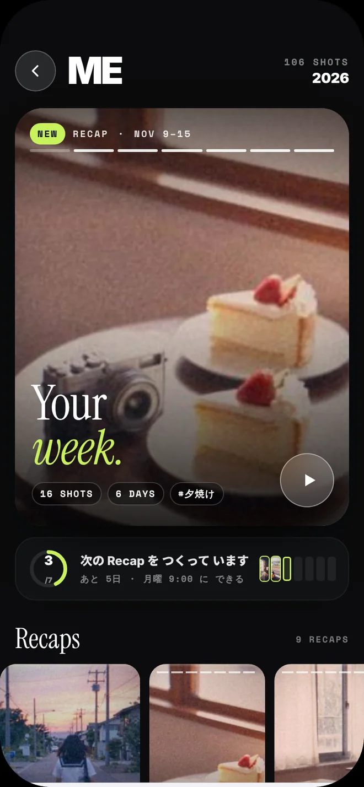

Friends
撮った人だけが、見られる。
今日 1枚 撮ると、ともだちの きのうが ひらきます。ともだちは 12人まで。人数は、どこにも 出ません。

01 ・ Developing
撮った 1枚は、ミルク色の まま ひと晩 預けます。中身は、じぶんにも 見えません。あしたの朝 9:00 に、ひらきます。
現像ちゅう ・ ミルク色が とけていく9:00 ・ きのうが、ひらきました
02 ・ How it works

Step 1
今日は、どんな日? 気分の ことばを 3つまで。つけずに 撮っても だいじょうぶ。

Step 2
撮れるのは 1日 3こま。写真でも、動画でも。24:00 の 消灯までが、今日です。

Step 3
仕上がった 1枚を、ともだちに 公開するか、自分だけに するか。えらぶのは、見てから。
03 ・ Friends / Groups / Mondo / Me
Friends
今日 1枚 撮ると、ともだちの きのうが ひらきます。ともだちは 12人まで。人数は、どこにも 出ません。
Groups
4〜8人の 部屋で、きのうを 見せあう。メッセージは 7日で きえます。

Mondo
地球の どこかで ひらいた きのうと、いちばん 多かった ことば。

Me
きのうの 写真は 7日で きえます。★ を つけた 1枚だけが、1年 のこる。月曜の 朝には、1週間の Recap が できています。

旅の あいだだけの アルバム。いっしょに 行く 人を さそえます。
Apple Music や Spotify から、写真に 1曲 つけられます。
となりで スマホを ふるだけ。QR や リンクでも つながれます。
04 ・ Q & A
あしたの朝 9:00 です。それまでは ミルク色の ままで、撮った 本人にも 見えません。
3こま までです。写真でも 動画でも、合わせて 3こま。24:00 に 消灯すると、その日は おしまいです。
朝に ひらいた あと、「友だちに 公開」か「自分だけ」を えらべます。ともだちの きのうは、今日 1枚 撮った 人だけが 見られます。
きのうの 写真は 7日で きえます。★ を つけた 1日 1枚だけが、1年 のこります。
アプリの 中から、通報と ブロックが できます。通報は、24時間 以内に 確認します。
はい。アプリの 設定から、いつでも 消せます。くわしくは プライバシーポリシー を ごらんください。
いまは iPhone 向けの ベータ版を、TestFlight で 配っています。招待リンクから 参加できます。
 #コーヒー
#コーヒー